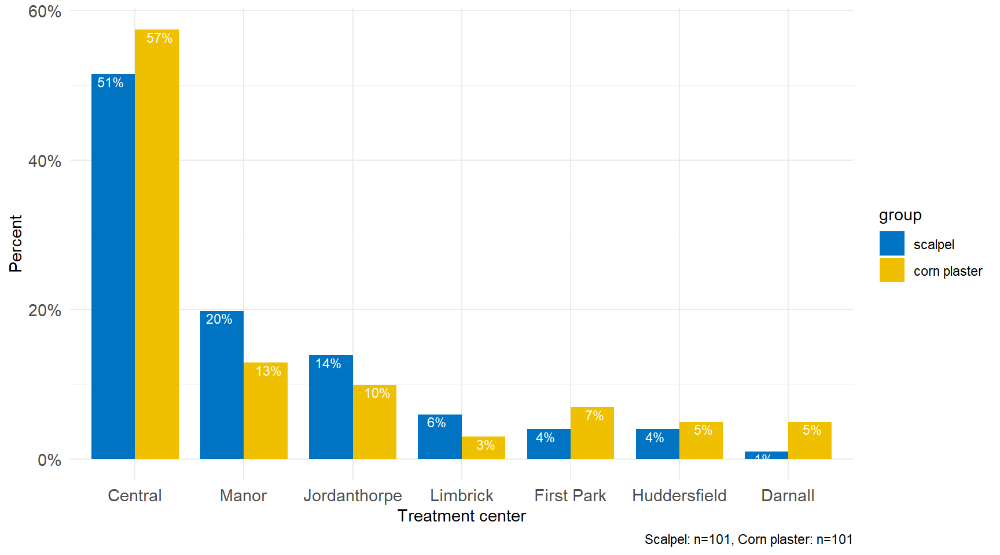
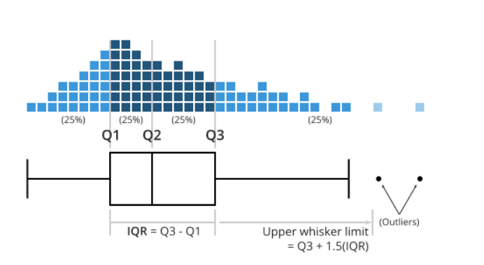

2 Descriptive statistics
Descriptive statistics are used to describe and organize the basic characteristics of the data in a study. The classical descriptive statistics allow us to have a quick glance of the central tendency and the extent of dispersion of values. They are useful in understanding a data distribution and in comparing data distributions and are usually presented in tables and graphs.
Table 2.1 presents a typical summary table of the basic characteristics (variables) of patients entered into Farndon et al. (2013) study.
2.1 Summarizing Categorical Data (Frequency Statistics)
Binary data are the simplest type of data. Each individual has a label which takes one of two values such as male or female, corn healed or not healed. A simple summary would be to count the different types of labels and find the frequencies. The set of frequencies of all the possible categories is called the frequency distribution of the variable.
However, a raw count is rarely useful. For example, in Table 2.1 there are more non-smokers in the scalpel group (40 out of 99 or 40%) compared to corn plaster group (34 out of 98 or 35%). It is only when this count is expressed as a proportion (relative frequency) that it becomes useful. Hence the first step to analyzing categorical data is to count the number of observations in each category (frequencies) and express them as proportions of the total sample size (relative frequencies).
2.2 Displaying Categorical Data
While frequency tables are extremely useful, the best way to investigate a data set is to plot it. For categorical variables, such as gender and treatment center, it is straightforward to present the number in each category, usually indicating the frequency and percentage of the total number of patients. When shown graphically this is called a bar plot.
A. Simple Bar Plot
A simple bar plot is an easy way to make comparisons across categories. Figure 2.1 shows the centers where 202 patients with foot corns were treated in the trial of Farndon et al. (2013). Along the horizontal axis (x-axis) are the different treatment centers whilst on the vertical axis (y-axis) is the percentage. The height of each bar represents the percentage of the total patients in that category. For example, it can be seen that the percentage of participants who were treated in the “Central” center was about 55%.
B. Side-by-side and Grouped Bar Plots
If the sample is further classified into whether the patient was treated with corn plasters or scalpel then it becomes impossible to present the data as a single bar plot. We could present the data as a side by side bar plot (see Figure 2.2) but is preferable to present the data in one graph with the same scales and axes to make the visual comparisons easier (grouped bar plot) (see Figure 2.3).


C. Stacked Bar Plot
Unlike a side-by-side or grouped graphs, Stacked Bar Plots segment their bars. A 100% Stack Bar Plot shows the percentage-of-the-whole of each group and are plotted by the percentage of each value to the total amount in each group. This makes it easier to see if relative differences exist between quantities in each group (see Figure 2.4).
In Figure 2.4 the bars are divided into two segments only (i.e., female and male) so it is easy to read the values of each segment and to compare a specific segment through the entire set of bars (in our case the percentages are equal). This comparison can be easily made because each segment is aligned through the entire set of bars (female to the left and men to the right). If more segments were added, however, the segments in the middle would not be aligned to the left or right, which would make comparisons difficult (see Figure 2.5).

Stacked bar plots tend to become confusing when the variable has many levels
One issue to consider when using stacked bar plots is the number of variable levels: when dealing with many categories, stacked bar plots tend to become rather confusing.
2.3 Summarizing Numerical Data
A quantitative measurement contains more information than a categorical one, and so summarizing these data is more complex. One chooses summary statistics to condense a large amount of information into a few intelligible numbers, the sort that could be communicated verbally. The two most important pieces of information about a quantitative measurement are ‘where is it?’ and ‘how variable is it?’ These are categorized as measures of location (or sometimes ‘central tendency’) and measures of spread or variability.
Measures of Location
A. Sample Mean or Average
Let \(x_1, x_2,...,x_{n-1}, x_n\) be a set of n measurements. The arithmetic sample mean or average, \(\bar{x}\) (pronounced x bar), is simply the sum of the observations divided by their number n, thus:
\[ \bar{x}= \frac{Sum \ of \ all \ sample \ values }{Size \ of \ sample}= \frac{x_1 + x_2 + ... + x_{n-1} + x_n}{n} \]
This formula is entirely correct, but it’s too long, so we make use of the summation symbol \(\scriptstyle\sum\) to shorten it:
\[\bar{x}=\frac{\sum_{i=1}^{n}x_{i}}{n}=\frac{1}{n}\sum_{i=1}^{n}x_{i} \tag{2.1}\]
In the above Equation 2.1, \(x_{i}\) represents the individual sample values and \({\sum_{i=1}^{n}x_{i}}\) their sum. The Greek letter \({\Sigma}\) (sigma) is the Greek capital ‘S’ and stands for ‘sum’ and simply means ‘add up the n observations \(x_{i}\) from the 1st to the last (nth)’.
Usually, we cannot measure the population mean \({\mu}\), which is the unknown constant that we want to estimate using the sample mean \(\bar{x}\).
The major advantage of the mean is that it uses all the data values, while the main disadvantage is its sensitivity to very large or very small values, which might be outliers (unusual values). For example, if we entered “100 mm” instead of “10 mm”, for the 15th patient, in the calculation of the mean, we would find the mean changed from 3.6 to 9.2. It does not necessarily follow, however, that outliers should be excluded from the final data summary, or that they result from a human error. Outliers can be legitimate anomalies that are vital for capturing information on the subject of interest.
If the data are binary and are coded 0 or 1, then \(\bar{x}\) is the proportion of individuals with value 1, and this can also be expressed as a percentage. In Farndon et al. (2013) data, the cases in which the corn was healed are coded as ‘1s’ and the cases in which the corn was not healed as ‘0s’. The corn had healed in 52 out of 189 patients (0.28 or 28%), which is equal to the “mean” of this variable 0.28.
B. Median
The sample median, md, is an alternative measure of location, which is less sensitive to outliers. For observed values \(x_1, x_2,...,x_{n-1}, x_n\) the median is calculated by first sorting the observed values (i.e., arranging them in an ascending/descending order) and selecting the middle one. If the sample size n is odd, the median is the number at the middle of the ordered observations. If the sample size is even, the median is the average of the two middle numbers.
Therefore, the sample median, md, of n observations is:
the \(\frac{n+1}{2}\)th ordered value, \(md=x_{\frac{n+1}{2}}\), if n is odd.
the average of the \(\frac{n}{2}\)th and \(\frac{n+1}{2}\)th ordered values, \(md=\frac{1}{2}(x_{\frac{n}{2}}+x_{\frac{n+1}{2}})\), if n is even.
C. Mode
A third measure of location is termed the mode. This is the value that occurs most frequently, or, if the data are grouped, the group with the highest frequency. It is not used much in statistical analysis, since its value depends on the accuracy with which the data are measured and ignores most of the information; although it may be useful for categorical data to describe the most frequent category. Note that some data sets do not have a mode because each value occurs only once.
However, the expression ‘bimodal’ distribution is used to describe a distribution with two peaks in it. This can be caused by mixing two or more populations together. For example, height might appear to have a bimodal distribution if one had men and women in the population.
Measures of Dispersion
We also need a numerical way of summarizing the amount of spread or variability in a data set. The tree main approaches to quantifying variability are: the range, the interquartile range (IQR), and the standard deviation.
A. Range
The simplest way to describe the spread of a data set is to report the minimum (lowest) and maximum (highest) values. The range is defined as the difference between the largest and the smallest observations in a sample. For some data it is very useful, because one would want to know these numbers, for example in a sample the age of the youngest and oldest participant. However, if outliers are present it may give a distorted impression of the variability of the data, since only two of the data points are included in making the estimate. Thus the range is affected by extreme values at each end of the data.
B. Quartiles and Interquartile Range
The quartiles, namely the lower quartile (\(Q_{1}\)), the median (\(Q_{2}\)) and the upper quartile (\(Q_{3}\)), split sorted data into four equal parts. That is there will be approximately equal numbers of observations in the four sections (and exactly equal if the sample size is divisible by four and the measures are all distinct). The quartiles are calculated in a similar way to the median; first order the data and then count the appropriate number from the bottom. The \(Q_{1}\) is the value below which 25% of the observations may be found, while the \(Q_{3}\) is the value above which the top 25% of the observations may be found (meaning that 75% of the data falls below the \(Q_{3}\)).
The interquartile range (IQR) is a useful measure of variability and is given by the difference of the lower and upper quartiles (IQR=\(Q_{3}\)-\(Q_{1}\)). It indicates the spread of the middle 50% (75%-25%) of the data.The IQR is an especially good measure of variability for skewed distributions or distributions with outliers.
The median and the quartiles are examples of percentiles - points which split the distribution of data into percentages above or below a certain value. The median is the 50th percentile, the \(Q_{1}\) is the 25th percentile, and the the \(Q_{3}\) is the 75th percentile.
C. Variance and Standard Deviation
For an individual with an observed value \(x_{i}\) the distance from the mean is \(x_{i}-\bar{x}\). With n such observations we have a set of n differences, one for each individual. The sum of the differences, \({\sum_{i=1}^{n}(x_{i}-\bar{x})}\) is always zero. However, if we square the distances before we sum them, we get always a positive quantity.This sum is then divided by n-1 and thus gives an average measure for the square of the deviation from the sample mean. This quantity is called the sample variance and is defined as Equation 2.2:
\[variance = s^2 = \frac{\sum\limits_{i=1}^n (x -\bar{x})^2}{n-1} \tag{2.2}\]
The variance is expressed in square units, so we can take the square root to return to the original units. This gives us the standard deviation (usually abbreviated as sd) defined as Equation 2.3:
\[sd=s = \sqrt\frac{\sum_{i=1}^{n}(x_{i}-\bar{x})^2}{n-1} \tag{2.3}\]
Examining this expression it can be seen that if all the x’s were the same, then they would equal x and so sd would be zero. If the x’s were widely scattered about x, then sd would be large. In this way sd reflects the variability in the data. Both, variance and standard deviation, are sensitive to outliers and thus they are inappropriate for skewed data.
2.4 Displaying Numerical Data
The best way for examining the distribution of numerical data is to generate an appropriate graph.
A. Histogram and density plot
The most common way of depicting a frequency distribution of a continuous variable is with a histogram.
A histogram (Figure 2.7 a) is a plot that depicts the distribution of a numeric variable’s values as a series of bars without space between them. Each bar typically covers a range of numeric values called a bin or class; a bar’s height indicates the frequency of observations with a value within the corresponding bin. A density plot (Figure 2.7 b) is a smoothed, continuous version of a histogram estimated from the data. In a density plot the total area under the curve integrates to one.
Figure 2.7 shows the distribution of age for the participants in Farndon et al. (2013) study. The vertical scale shows (a) frequency (histogram) or (b) probability density (density plot).

A histogram (or density plot) gives information about:
How the data are distributed: (a) left-skewed, (b) symmetric (e.g., normal distribution), (c) right-skewed and if there are any outliers.
The amount of variability in the data.
Where the peaks of the distribution are.
Choose an appropriate number of bins
While tools that can generate histograms usually have some default algorithms for selecting bin boundaries, we will likely want to play around with the binning parameters to choose something that is representative of our data.
Choice of bin size has an inverse relationship with the number of bins Figure 2.8. The smaller the bin sizes, the more bins there will be to cover the whole range of data. With a larger bin size, the fewer bins there will need to be. It is worth taking some time to test out different bin sizes to see how the distribution looks in each one, then choose the plot that represents the data best.

If we have too many bins, then the data distribution will look rough, and it will be difficult to discern the signal from the noise (Figure 2.8 a). On the other hand, with too few bins, the histogram will lack the details needed to discern any useful pattern from the data (Figure 2.8 b).
We can also create a histogram or density plot by group. Figure 2.9 depicts the probability density of age by treatment group.

Histograms must be plotted with a zero-valued baseline
An important aspect of histograms is that they must be plotted with a zero-valued baseline. Since the frequency of data in each bin is implied by the height of each bar, changing the baseline or introducing a gap in the scale will skew the perception of the distribution of data.
B. Box Plot
A box plot chart is another graph that can be used for conveying location and variation information for continuous data, particularly for detecting changes between different groups of data before any formal analyses are performed.
A box plot (aka box and whisker plot) uses boxes and lines to depict the distributions of one or more groups of numerical data. Box limits indicate the range of the central 50% of the data, with a central line marking the median value. Lines extend from each box to capture the range of the remaining data, with dots placed past the line edges to indicate outliers.

In Figure 2.10 the distance between \({Q3}\) and \({Q1}\) is the interquartile range (IQR) and plays a major part in how long the whiskers extending from the box are. Each whisker extends to the furthest data point in each wing that is within 1.5 times the IQR. Any data point further than that distance is considered an outlier, and is marked with a dot. There are other ways of defining the whisker lengths, which are not presented in this textbook.
Figure 2.11 illustrates a box plot that presents the age of participants in Farndon et al. (2013) study.
Figure 2.12 illustrates a grouped box plot that presents the age by treatment group.
C. Raincloud Plot
There are many variations of the boxplot. For example, there is a way to combine raw data (dots), probability density, and key summary statistics such as median, and relevant intervals of a range of likely values for the population parameter, in an appealing and flexible format with minimal redundancy, using the raincloud plot (Figure 2.13):
D. Scatter plot
Scatter plots are two dimensional graphs, showing the association between two continuous variables such as age and baseline pain (Figure 2.14 a). By coloring the data by a third categorical variable (here is gender), scatter plots can provide additional dimensions (Figure 2.14 b).
As the scatter plots suggest, there is not association between age and baseline pain: the points seem to be scattered randomly.
2.5 Exercises
- First Exercise
- Second Exercise